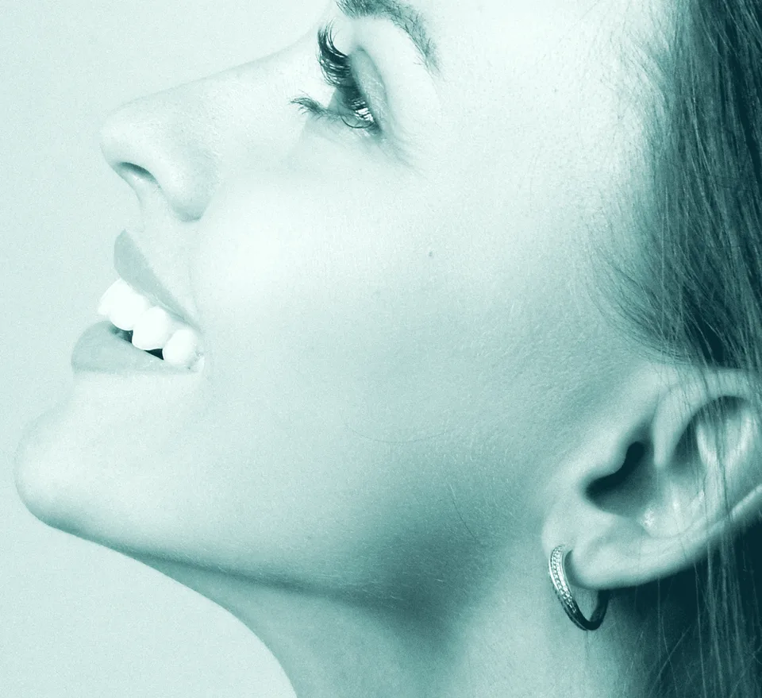
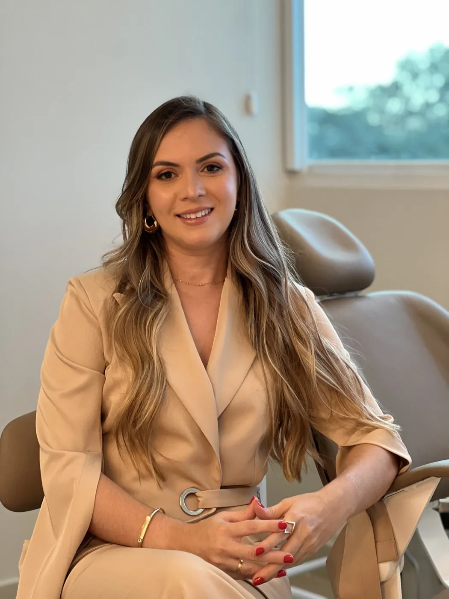

Dentes inclusos
Dentes que não nasceram por completo, como os sisos, e precisam ser avaliados.
Dra. Larissa Pires Barbosa · Cirurgiã-dentista
Antes de qualquer decisão, você entende o seu caso, tira suas dúvidas e sabe quais são as opções. Atendimento com a Dra. Larissa, na Integra Saúde.
Você fala pelo WhatsApp e tira suas dúvidas antes de marcar.
Dra. Larissa Pires Barbosa · Cirurgiã-dentista · CRO-PI 3295

Maxila Siso ATM MandíbulaCentro cirúrgico, UTI e pronto-socorro
A avaliação não termina obrigatoriamente em cirurgia
A avaliação é sempre feita por ela
Quando procurar
Cada caso é único. A indicação só acontece depois de avaliar você.
Dentes que não nasceram por completo, como os sisos, e precisam ser avaliados.
Quando há indicação de avaliar a cirurgia ortognática, geralmente com o seu ortodontista.
Quando um acidente atinge a face ou os maxilares e pede avaliação especializada.
Queixas nessa articulação em que se avalia se existe indicação cirúrgica.
Alterações que precisam ser investigadas por um profissional.
Casos em que a estrutura da face precisa de planejamento cirúrgico.
Quem conduz o seu cuidado
Passei mais de 8.000 horas me formando dentro de hospital, entre centro cirúrgico, UTI e pronto-socorro.
Por isso, cada avaliação começa por entender o seu caso e explicar tudo com clareza. Você só decide depois de saber quais são as opções, as etapas e o que esperar da recuperação.
Quero conversar com a Dra. LarissaResidência hospitalar em São Paulo · Cirurgiã-dentista · CRO-PI 3295 · Cirurgia e Traumatologia Bucomaxilofacial

Como funciona
Pelo WhatsApp, você conta o que precisa e escolhe o melhor horário.
A Dra. Larissa ouve você, avalia o caso e pede exames, se forem necessários.
Ela explica o que foi visto, o que pode ser feito e como seria o preparo e o pós-operatório, quando houver indicação. A decisão é tomada com você.
Para colegas dentistas
Se você procura uma colega para receber pacientes com indicação cirúrgica, vamos conversar sobre como organizar o encaminhamento e a troca de informações sobre o caso.
Falar sobre encaminhamentoNão. A avaliação serve para entender o caso. A cirurgia só é considerada quando existe indicação.
Essa dúvida é muito comum. O que esperar depende do procedimento e de cada pessoa. Na avaliação, a Dra. Larissa explica como é o controle da dor e os cuidados no seu caso.
Varia conforme o procedimento e a resposta de cada organismo. Antes de qualquer decisão, você recebe as orientações sobre preparo, repouso e retornos.
Se você já tiver exames, leve na consulta. Caso sejam necessários novos exames, a Dra. Larissa vai orientar você.
Sim. Fale pelo WhatsApp e, se tiver, leve o encaminhamento e os exames.
A equipe informa as condições de atendimento pelo WhatsApp.